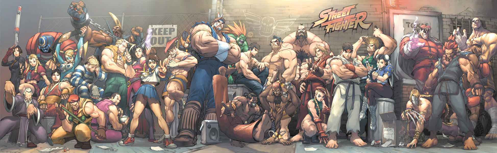

Street Fighter
Street Fighter is a fighting game by Capcom and is designed by Takashi Nishiyama and Hiroshi Matsumoto. Its first game released in August 1987 and the game has evolved through the years, and is one of the most popular video games today. The latest “Street Fighter V” was released February 16th 2016.
The first Street Fighter game, made its debut in arcades, in 1987. There were only about 10 characters from different countries at this time. A second player can join and be your opponent. In 1991, Street Fighter II has been released and was the first true sequel to the original. It was the first one-on-one fighting game and had each player orchararcter have their own special moves up to approximately 30 or more, including 2 or 3 special attacks. Street Fighter III later on debuted in 1997, They kept only 2 of the original characters, Ryu and Ken, and introduced new characters.